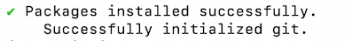
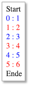

Angular¶
Angular gehört neben React.js und Vue.js zu den meisteverwendeten Frameworks für die Entwicklung sogenannter Single-Page-Applikationen. In einer Single-Page-Applikation wird eine Seite vom Webserver geladen und diese Seite durch unterschiedliche Inhalte befüllt, je nach Nutzerinteraktion. Diese Inhalte werden in Angular durch sogenannte Komponenten bereitsgestellt. Komponenten sind die Grundbausteine einer Angular-Anwendung.
Das erste Release von Angular erschien 2010 (damals noch unter dem Namen AngularJS, ab Version 2 nur noch Angular). React und Vue kamen 2013 bzw. 2014 erstmalig heraus. Angular wird hauptsächlich von Google, React hauptsächlich von Facebook und Vue als Community-Version entwickelt. Alle drei Frameworks stehen unter MIT-Lizent.
Neben HTML und CSS verwendet Angular TypeScript. TypeScript ist eine Obermenge von JavaScript. Das bedeutet, dass jeder JavaScript-Code auch TypeScript ist, aber nicht umgekehrt. TypeScript-Code wird compiliert und erzeugt JavaScript-Code, der vom Browser ausgeführt werden kann. Im Gegensatz zu JavaScript ist TypeScript typsicher und klar objektorientiert.
Erstes Projekt erstellen¶
Eine Angularanwendung besteht hauptsächlich aus Komponenten und
Services. Um die Anwendung selbst sowie Komponenten und Services
zu erstellen, wird am besten das Command Line Interface for
Angular (Angular CLI) verwendet.
Öffnen Sie ein Terminal (Windows-Nutzerinnen sollten die
Git-Bash verwenden, die Sie
bereits mit Git installiert haben). Wechseln Sie im Terminal
in das Verzeichnis, das Ihre Projekte enthalten soll. Für das
Wechseln in andere Verzeichnisse nutzen Sie den
cd Befehl (change directory). Um die Anwendung
"first" zu erzeugen, geben Sie folgenden Befehl in das
Terminal ein:
ng new first
ng steht für Angular. Mit dem Attribut new geben Sie an,
dass Sie ein neues Projekt erzeugen wollen. first ist der
Name des Projektes. Wenn Sie gefragt werden, ob Sie Angular routing
verwenden möchten, geben Sie ein y ein. Wenn Sie nach dem stylesheet
format gefragt werden, können Sie CSS einfach mit Enter bestätigen.
Wenn alles geklappt hat, erhalten Sie im Terminal eine Ausgabe in der Form:

Es entsteht ein Ordner first in Ihrem Projekte-Verzeichnis. Wechseln Sie
in dieses Verzeichnis:
cd first
Führen Sie darin den Befehl:
npm install
aus. Damit werden alle Abhängigkeiten, die in der Datei package.json definiert sind, geladen und das node_modules-Verzeichnis erstellt. Siehe z.B. hier. Danach geben Sie
ng serve
ein. Es werden die entsprechenden TypeScript-Dateien compiliert und es erscheint am Ende eine Ausgabe, wie z.B.
** Angular Live Development Server is listening on localhost:4200, open your browser on http://localhost:4200/ **
:Compiled successfully.
Öffnen Sie Ihren Browser und geben Sie als URL
http://localhost:4200
ein. Folgende Seite sollte erscheinen:
Success
Fertig! Sie haben Ihr erstes Angular-Projekt erstellt.
Angular-Projektstruktur¶
Öffnen Sie die IDE Ihrer Wahl (Screenshots hier mit [PhpStorm]
(https://www.jetbrains.com/de-de/phpstorm/). Wählen Sie unter
Open Project den Projektordner first. Klappen Sie das Projekt
first auf, klappen Sie den Ordner src und dann den Ordner
app auf. Der Projektexplorer zeigt folgendes Bild:

- Die meiste Arbeit wird im
src-Ordner erledigt. Darin befindet sich (wird sich befinden) der Code unserer Anwendung. - Darin der wichtigste Ordner ist der
app-Ordner. Hier werden wir unsere Module, Komponenten und Services hinzufügen. - In dem
assets-Ordner werden Bilder, Icons und Daten abgelegt. - Der
node_modules-Ordner enthält alle benötigten 3rd-party-libraries. Welche das sind, wird in der Dateipackage.jsonals dependencies definiert. Mithilfe des Befehlsnpm installwerden alle benötigten Module dem Ordnernode_moduleshinzugefügt. - Der Ordner
environmentsenthält die notwendigen Konfigurationsinformationen für den development- und den production-Modus. Wir entwickeln zunächst im development-Modus. favicon.icoist das Favicon - ein kleines Icon, das im Reiter erscheint. Wählen Sie am besten ein eigenes.index.htmlist die Hauptseite. Mithilfe von Angular entwickeln wir eine Single Page Application, d.h. es wird eine einzige HTML-Seite geladen (index.html) und jeder weitere Inhalt wird asynchron hinzugefügt.styles.cssenthält die globalen Stylesheets, d.h. die CSS-Eigenschaften, die für das gesamte Projekt gelten sollen.- Die
app.component.*-Dateien beschreiben die app-Komponente. Eine Komponente besteht aus einer HTML-, einer CSS- und einer TypeScript-Datei (auch noch eine*.spec.ts, aber die interessiert zunächst nicht).
Öffnen Sie in Ihrer IDE die Datei app.component.html. Löschen
Sie den kompletten Inhalt und lassen nur noch
<router-outlet></router-outlet>.
Fügen Sie oberhalb von <router-outlet></router-outlet>
die Zeile <h1>This is app</h1> ein. Gehen Sie wieder zum
Browser und schauen sich den geöffneten Tab mit der URL localhost:4200 an.
Es erscheint der folgende Inhalt:

Öffnen Sie die app.component.css-Datei und geben Sie dort
h1 {
color: red;
}
Nach den Änderungen in app.component.css erscheint der Text der Überschrift in rot:

Zusammenfassung
Wir haben die die app.component.html geändert, um den
Inhalt der dargestellten Seite anzupassen und die
app.component.css, um Änderungen an der Darstellung
(dem Stil) des Inhalts durchzuführen.
Komponenten¶
Eine Angular-Anwendung besteht hauptsächlich aus Komponenten. Jede Anwendung hat eine Hauptkomponente - die sogenannte Root Component. Diese Hauptkomponente ist meistens die AppComponent. Eine Komponente hat eine in sich geschlossene Bedeutung, z.B. ein Formular für Dateneingabe, eine Liste aller Daten oder auch nur ein bestimmtes Element.
Eine Komponente besteht aus einer View (Template) und einer TypeScript-Klasse. Die AppComponent besteht z.B. aus der app.component.html (der View) und der app.component.ts (der TypeScript-Klasse). Die TypeScript-Klasse kümmert sich um die Verwaltung der Daten, die in der View dargestellt und/oder durch Eingaben erzeugt werden. Die TypeScript-Klasse beschreibt die Logik der Komponente. Die View ist der dargestellte Bereich der Komponente, also das, was man im Browser von der Komponente sieht.
Neben der *.html- und der *.ts-Datei einer Komponente gibt es auch noch die *.css-Datei (also z.B. app.component.css). Diese enthält CSS-Eigenschaften, die speziell für die Komponente gelten sollen.
Um eine Komponente der gesamten Anwendung als Komponente bekannt zu machen, wird der Decorator @Componentverwendet. Decoratoren erkennt man am führenden @-Zeichen. Sie werden verwendet, um Metadaten der Anwendung zu verwalten. Der typische Aufbau einer Komponente (hier AppComponent - app.component.ts):
@Component({
selector: 'app-root',
templateUrl: './app.component.html',
styleUrls: ['./app.component.css']
})
export class AppComponent {
title = 'book-app';
}
Der Selektor gibt an, dass überall dort, wo app-root als Elementselektor <app-root> </app-root> verwendet wird, das in app.component.html definerte Template eingesetzt wird. Angenommen, in app.component.html ist der HTML-Code:
<h1>This is app</h1>
definiert. Dann wird dieser Code als Inhalt in das HTML-Element <app-root> </app-root> eingesetzt:
<app-root>
<h1>This is app</h1>
</app-root>
Wir schauen uns ein ausführlicheres Beispiel im Folgenden an, in dem wir eine neue Komponente erzeugen.
Eine neue Komponente erzeugen¶
Mithilfe von Angular-CLI erzeugen wir in unserer App first eine neue Komponente. Wir wechseln dazu im Terminal in den Ordner von first und geben dann
ng generate component mycomponent
ein. Später kürzen wir solche Eingaben ab. Anstelle von generate brauchen wir auch nur g zu schreiben. Und anstelle von component genügt c. Das heißt, wir hätten stattdessen auch
ng g c mycomponent
schreiben können. In unserer first App gibt es nun die Komponente mycomponent:

Jede Angular-Komponente besteht aus vier Teilen:
- der TypeScript-Klasse (die
*.component.ts-Datei) - dem Template (die
*.component.html-Datei) - den Styles (die
*.component.css-Datei) - einer Testspezifikation (die
*.component.spec.ts-Datei)
Jede Komponente wird in der app.module.ts der gesamten Anwendung bekannt gemacht. Das erfolgt mithilfe der Eigenschaft declarations im Decorator @NgModule():
import { BrowserModule } from '@angular/platform-browser';
import { NgModule } from '@angular/core';
import { AppRoutingModule } from './app-routing.module';
import { AppComponent } from './app.component';
import { MycomponentComponent } from './mycomponent/mycomponent.component';
@NgModule({
declarations: [
AppComponent,
MycomponentComponent
],
imports: [
BrowserModule,
AppRoutingModule
],
providers: [],
bootstrap: [AppComponent]
})
export class AppModule { }
Das obige Listing zeigt, dass die neue Komponente Mycomponent registriert wurde. Um dieses Eintragen in die app.module.ts müssen wir uns aber nicht kümmern, das erledigt die Angular-CLI mit der Anweisung zur Erstellung einer neuen Komponente ng generate component newComponent.
Doppelklicken Sie im Projektexplorer Ihrer IDE auf die Datei mycomponent.component.ts, um sie zu öffnen. Sie enthält den folgenden Quelltext:
import { Component, OnInit } from '@angular/core';
@Component({
selector: 'app-mycomponent',
templateUrl: './mycomponent.component.html',
styleUrls: ['./mycomponent.component.css']
})
export class MycomponentComponent implements OnInit {
constructor() { }
ngOnInit(): void {
}
}
Wir ändern diese Datei zunächst nicht und öffnen auch noch die mycomponent.component.html. Diese enthält nur ein HTML-Element, einen Absatz:
<p>mycomponent works!</p>
Wir ändern auch diese Datei zunächst nicht und öffnen die app.component.html - die HTML-Datei unserer Root-Komponente. Diese sieht derzeit so aus:
<h1>This is app</h1>
<router-outlet></router-outlet>
Wir fügen in die Datei den Selektor app-mycomponent unserer neuen Mycomponent-Komponente als HTML-Element ein:
<h1>This is app</h1>
<app-mycomponent></app-mycomponent> <!-- eingefuegt -->
<router-outlet></router-outlet>
Dieses Element dient als "Platzhalter" für das Template unserer neuen Komponente. Das bedeutet, dass in dieses Element der HTML-Code aus mycomponent.component.html eingefügt wird. Wechseln Sie in den Browser auf den Tab mit Ihrer Anwendung (http://localhost:4200/). Sie sehen folgendes Bild:

Unterhalb der Überschrift (<h1>This is app</h1>) wurde also der Absatz <p>mycomponent works!</p> eingefügt. Wenn Sie sich den Quelltext Ihrer Seite anschauen, z.B. über die Entwicklertools Ihres Browsers (z.B. für Chrome), dann wird folgender Code sichtbar:

Wir können hier die Attribute der HTML-Elemente vernachlässigen (also z.B. _nghost-menu-c19 oder ng-version="9.0.7"). Aber es wird folgende HTML-Struktur sichtbar:
<app-root>
<h1>This is app</h1>
<app-mycomponent>
<p>mycomponent works!</p>
</app-mycomponent>
<router-outlet></router-outlet>
</app-root>
Das Element <app-root> fungiert als Platzhalter für die gesamte App. In dieses Element wird der gesamte Inhalt der Anwendung eingebunden (siehe app.component.html). Dies ist hier zunächst eine Überschrift <h1>, die von dem Element für die Mycomponent-Komponente gefolgt wird. Das bedeutet, dass in das Element <app-mycomponent> der Inhalt der Komponente Mycomponent eingebunden wird. Das ist hier nur ein Absatz <p> (siehe dazu mycomponent.component.html). Das Element router-outlet> soll uns an dieser Stelle noch nicht interessieren. Das wird erst interessant, wenn wir über das Routing in einer Angular-Anwendung sprechen.
Direktiven¶
In Angular gibt es 3 Arten sogenannter Direktiven (engl. Directives):
- Komponentendirektiven (Components—directives)
- Attributdirektiven (Attribute Directives)
- Strukturdirektiven (Structural-Direktives)
Komponentendirektiven sind die meistverwendete Art und bereits in Angular → Kompnenten betrachtet. Attribut- und Strukturdirektiven können als HTML-Attribute verstanden werden, die dem HTML-Element ein zusätzliches Verhalten hinzufügt. Attributdirektiven wirken sich das innere Verhalten eines HTML-Elementes aus (z.B. können damit CSS-Eigenschaften geändert, hinzugefügt oder gelöscht werden). Mit Strukturdirektiven kann die Struktur des DOMs geändert werden (z.B. können ganze HTML-Elemente dem DOM-Baum hinzugefügt werden).
*Strukturdirektiven¶
Strukturdirektiven beginnen immer mit einem Stern *. Die bekanntesten Vertreter sind
*ngFor*ngIf*ngSwitch
Diese sind auch in angular.io erläutert. Wir erläutern die darin aufgeführten Beispiele und beginnen mit *ngIf:
1 2 3 4 5 6 7 8 | |
Die Direktive *ngIf wird also wie ein Attribut des <p>-Elementes behandelt. Das Attribut *ngIf hat entweder den Wert "true" oder den Wert "false". Ja nach Wert des Attributes wird das jeweilige <p>-Element in den DOM-Baum eingebunden. Also entweder das <p>-Element aus den Codezeilen 1-4 (bei Wert "true") oder das <p>-Element aus den Codezeilen 5-8 (bei Wert "false"). In einer echten Anwendung ergibt sich der Wert des Attributes/der Direktive meistens aus dem Wert einer boole'schen Variablen oder einem anderen boole'schen Ausdruck.
Das nicht dargestellte Element ist auch nicht Teil des DOMs! Es ist also nicht einfach nur auf hide gesetzt, sondern es ist gar nicht im DOM vorhanden.
Intern wird aus der *ngIf-Direktive übrigens ein sogenanntes Property-Binding:
<ng-template [ngIf]="true">
<p>
Expression is true and ngIf is true.
This paragraph is in the DOM.
</p>
</ng-template>
<ng-template [ngIf]="false">
<p>
Expression is false and ngIf is false.
This paragraph is not in the DOM.
</p>
</ng-template>
Die *ngFor-Direktive ist etwas komplexer als *ngIf. Für *ngFor benötigen wir mindestens eine Liste (oder ein Array) und eine Laufvariable, die die Werte aus der Liste annehmen kann. Im folgenden Beispiel ist i unsere laufvariable und [1, 2, 3, 4, 5, 6] unser Array.
<div *ngFor="let i of [1, 2, 3, 4, 5, 6]">
{{ i }}
</div>
Für jeden Wert aus der Liste wird ein eigenes <div>- Element erzeugt. Der DOM-Baum sieht für obiges Beispiel also wie folgt aus (Angular-Attribute weggelassen):
<div> 1 </div>
<div> 2 </div>
<div> 3 </div>
<div> 4 </div>
<div> 5 </div>
<div> 6 </div>
Außerdem stellt *ngFor noch einige Hilfsvariablen zur Verfügung, die ebenfalls genutzt werden können:
index(Index des aktuellen Elementes0, 1, 2, ...)first(isttrue, wenn erstes Element, sonstfalse)last(isttrue, wenn letztes Element, sonstfalse)even(isttrue, wenn Index gerade, sonstfalse)odd(isttrue, wenn Index ungerade, sonstfalse)
Folgend ein komplexeres Beispiel unter Verwendung einiger Hilfsvariablen:
1 2 3 4 5 6 7 8 9 | |
In Zeile 1 ist unsere Laufvariable durch das Array nun value. Außerdem wird der jeweilige Wert von index in der Variablen i (Zeilennummer 2)
gespeichert, der Wert von first in der Variablen f(Zeilennummer 3), der Wert von last in der Variablen l(Zeilennummer 4) und der Wert von odd in der Variablen o(Zeilennummer 5) - die Hilfsvariable even betrachten wir hier nicht, da deren Wert genau der Negation von odd entspricht. In Zeile 6 wenden wir die *ngIf-Direktive an: ein <div> mit dem Inhalt Start wird vor dem ersten Element aus dem Array ausgegeben. Für jedes weitere Element nicht mehr. In Zeile 7 erfolgt ein Property Binding: die color-Eigenschaft bekommt einen Wert zugewiesen. Der Wert ist jedoch abhängig davon, ob o wahr ist (dann Wert red) oder falsch (dann Wert blue). Zeile 7 zeigt außerdem wie mithilfe von Interpolation der Wert von i und der Wert von value, getrennt mit : ausgegeben werden. Die Ausgabe ist also:

Aufgabe
Informieren Sie sich auch über die *ngSwitch-Direktive. Implementieren Sie ein Beispiel, in dem Sie die 3 Direktiven *ngIf, *ngFor und *ngSwitch anwenden.
{{ Interpolation }}¶
Interpolation ist die einfachste Form des data binding. Syntaktisch erkennt man Interpolation an den doppelten geschweiften Klammern {{ Interpolation }}.
1 2 3 4 5 6 7 8 9 10 11 12 13 14 | |
Im obigen Beispiel hat die Komponente LessonComponent zwei Eigenschaften: headline und name. In obiger Komponente wird (zur Anschauung) sogenanntes inline templating verwendet, d.h. es gibt keine eigene lesson.component.html-Datei, in der der HTML-Code steht, sondern der HTML-Code wird direkt in die template-Eigenschaft der Typescript-Datei lesson.component.tseingefügt (siehe Zeilen 5-8 im obigen Beispiel). Der HTML-Code wird in backticks eingefasst (``), nicht zu verwechseln mit den einfachen Anführungsstrichen ('').
Damit inline templating möglich ist, wird die Komponente mit dem Flag -t erzeugt (inlineTemplate=true), d.h. unsere Lesson-Komponente wurde mithilfe der CLI wie folgt erzeugt:
ng g c lesson -t
Eine Interpolation kann auch Ausdrücke enthalten, die aufgelöst werden, z.B.
<p>1 + 2 = {{1 + 2}}.</p>
Man kann mithilfe einer Direktive durch ein Array laufen und jedes einzelne Element mithilfe von Interpolation ausgeben:
@Component({
selector: 'app-lesson',
template: `
<ol>
<li *ngFor="let day of weekdays">{{ day }}</li>
</ol>
`,
styleUrls: ['./lesson.component.css']
})
export class LessonComponent {
weekdays = ['Monday', 'Tuesday', 'Wednesday', 'Thursday', 'Friday', 'Saturday', 'Sunday'];
}
Oder es ist möglich, Attributen von HTML-Elementen mithilfe von Interpolation Werte zuzuordnen:
@Component({
selector: 'app-lesson',
template: `
<img src="{{ imgUrl }}" />
`,
styleUrls: ['./lesson.component.css']
})
export class LessonComponent {
imgUrl = 'https://www.dpunkt.de/common/images/cover_masterid/800/12400.jpg';
}
[Property Bindings]¶
Insbesondere, wenn Attributen von HTML-Elementen Werte zugeordnet werden sollen (so wie im letzten Beispiel des Abschnitts {{Interpolation}}), spricht man von property binding. Property binding spielt eine große Rolle beim Datenfluss von Eltern-Komponenten auf Kind-Komponenten. Die generelle Idee dabei ist, dass mithilfe von property binding Werte (Daten) an Attribute von HTML-Elementen bindet. Diese HTML-Elemente können auch Komponenten sein.
Wir betrachten zunächst die unterschiedlichen Arten (Notationen) von property binding:
<element [property]="ausdruck"></element>
D.h. ein ausdruck wird übergeben, der zu einem Wert aufgelöst wird und dieser Wert wird dem Attribut property übergeben. Betrachten wir nochmals das letzte Beispiel aus dem Abschnitt {{Interpolation}}). Bei diesem Beispiel haben wir Interpolation verwendet, um dem Attribut src des HTML-Elementes img einen Wert zuzuweisen. Das exakt gleiche Verhalten lässt sich auch mittels property bindings erzeugen:
<img [src]="imgUrl" />
<!-- imgUrl = 'https://www.dpunkt.de/common/images/cover_masterid/800/12400.jpg'; -->
Neben diesen "allgemeinen" property bindings gibt es auch noch "spezielle" property bindings, nämlich class bindings und style bindings. Bei class bindings wird das Präfix class vor die property (die entsprechende CSS-Klasse) gesetzt:
<element [class.class1]="class1enabled"
[class.class2]="class2enabled" ... ></element>
D.h. die CSS-Klasse class1ist genau dann wirksam, wenn der Ausdruck class1enabled true ist und class2ist genau dann wirksam, wenn der Ausdruck class2enabled true ist usw.
Bei den style bindings werden jedoch gar keine Ausdrücke, sondern Werte übergeben:
<element [style.color]
(Event Bindings)¶
In den property bindings haben wir gesehen, wie Werte Attributen (Eigenschaften) von Elementen zugeordnet werden können. Aus JavaScript ist auch bekannt, dass Ereignisse Attribute von Elementen sein können, z.B. onClick, onKeyup, onChange usw. Dabei handelt es sich um sogenannte native DOM-Ereignisse. Neben der Möglichkeit, solche nativen DOM-Ereigniss zu behandeln, bietet Angular auch die Möglichkeit, eigene Ereignisse zu definieren und diese zu behandeln. Wir betrachten beide Möglichkeiten und beginnen mit den nativen Ereignissen.
Native DOM-Ereignisse¶
In HTML sieht das unter Aufruf einer JavaScript-Funktion für die Ereignisbahandlung dann typischerweise (hier das Click-Ereignis für einen Button) wie folgt aus:
<button onClick="doSomething()">Click here!</button>
function doSomething()
{
// something to do
}
In Angular ist das Prinzip das gleiche, nur dass das Ereignis in runden Klammern genannt und an dieses Ereignis die Ereignisbehandlung gebunden wird (event binding). Das bedeutet, das Angular-Template für das obige Beispiel sieht wie folgt aus:
<button (click)="doSomething()">Click here!</button>
export class EventsComponent {
doSomething() {
// something to do
}
}
Dieses Prinzip gilt für alle nativen DOM-Ereignisse. Hier ein kurzer Überblick über die wichtigsten (für eine umfangreichere Liste siehe hier oder hier):
| Ereignis | Beschreibung |
|---|---|
click |
Mausklick auf das Element |
change |
Der Inhalt/Wert eines Elementes hat sich geändert |
mouseover |
die Maus wird über das Element bewegt |
mouseout |
die Maus wird vom Element wegbewegt |
keydown |
eine Taste der Tastatur wird gedrückt |
keyup |
Loslassen einer Taste |
load |
der Browser hat die Seite vollständig geladen |
focus |
Fokussieren des Elements (z.B. Anklicken) |
blur |
Verlieren des Fokus (z.B. Klick außerhalb) |
submit |
Abschicken eines Formulars |
copy, paste |
Kopieren, Einfügen von Text |
Einen kleinen Unterschied gibt es noch bei der Übergabe des Ereignisses an die das Ereignis behandelnde Funktion zu beachten. Während in plain JavaScript das Ereignis mit event der Funktion übergeben wird, erfolgt die Übergabe des Ereignisses in Angular mit $event. Beispiel:
<input (change)="showPayload($event)" type="text" />
export class EventsComponent {
showPayload(e: Event) {
console.log(e);
}
}
Alle Events (in TypeScript/Angular) sind vom Typ Event. Es gibt noch speziellere Eventtypen, die aber alle auf dem Interface Event basieren, z.B. MouseEvent, InputEvent, KeyboardEvent, UIEvent, ClipboardEvent. Weitere Details siehe hier.
Die einfache JavaScript-Attributschreibweise kann in Angular nicht verwendet werden, sondern immer nur die event binding-Schreibweise von Angular (mit den runden Klammern)!
Eigene Ereignisse¶
Für eine Komponente kann ein eigenes - nicht natives - Ereignis definiert werden. Dies geschieht, indem für eine Komponente eine neue Eigenschaft (z.B. myEvent) definiert wird und diese vom Typ EventEmitter deklariert wird. Mithilfe von Generics kann der Typ des Events angegeben werden, der ausgelöst werden soll - wenn Sie den Typ nicht genau kennen, verwenden Sie any. Soll das Ereignis an die Elternkomponente weitergeleitet werden, was meistens der Fall ist, wird der Decorator @Output()verwendet.
Das Auslösen des Events geschieht dann durch die emit()-Methode von EventEmitter. Hier ein typisches Beispiel (zunächst die Kindkomponente EventsComponent - also events.component.html und events.component.ts):
<button (click)="emitMyEvent()">Click here!</button>
1 2 3 4 5 6 7 8 9 10 11 12 13 14 15 | |
Die .html-Datei definiert einen Button mit dem nativen Ereignis click. Dieses wird durch die Methode emitMyEvent() behandelt.
In der .ts-Datei ist diese Methode definiert (Zeilen 11-13). Darin wird das eigene Event myEvent ausgelöst. Dieses Event ist ein Objekt vom Typ EventEmitter, typisiert als any (beliebiger Typ). Das Auslösen dieses Events wird an die aufrufende Komponente (die Elternkomponente) ausgegeben (Decorator @Output()). Deklaration der Eigenschaft und Dekorieren mit @Output() in Zeile 9. Das Auslösen des eigenen Events erfolgt durch den Aufruf der Methode emit() aus EventEmitter (Zeile 12).
In der Elternkomponente kann dieses Ereignis nun empfangen werden (Beispiel einer Elternkomponente AppComponent - also app.component.html und app.component.ts):
<app-events (myEvent)="handleEventFromEventsComponent()"></app-events>
1 2 3 4 5 6 7 8 9 10 11 12 13 14 | |
In der AppComponent (das kann natürlich eine beliebige Komponente sein), wird die EventsComponent eingebunden (siehe <app-events> im Template der AppComponent). Dadurch entsteht die Hierarchie Elternkomponente AppComponent → Kindkomponente EventsComponent im DOM.
Mithilfe von event binding wird die Behandlung des Ereignisses myEvent an die Methode handleEventFromEventsComponent() gebunden. In dieser Methode erfolgt hier einfach nur eine Ausgabe auf die Konsole.
Interessant ist, dass wir dadurch die Möglichkeit haben, Daten von der Kindkomponente zur Elternkomponente fließen zu lassen. Dazu übergeben wir diese Daten als payload des Ereignisses. Dafür typisieren wir EventEmitter mit dem Typ, von dem wir Daten übergeben wollen (z.B. Book - siehe Bücher-App). Die beiden obigen Beispiele sehen dann wie folgt aus (zuerst wieder EventsComponent):
<button (click)="emitMyEvent(book)">Click here!</button>
1 2 3 4 5 6 7 8 9 10 11 12 13 14 15 | |
Im Template (HTML) werden die Daten der Ereignisbehandlung übergeben. Das EventEmitter-Objekt ist mit dem konkreten Datentyp typisiert. Bei Aufruf der Methode emit() werden die Daten an die Elternkomponente übergeben.
Die Elternkomponente (hier wieder AppComponent kann diese Daten, die von der Kindkomponente an die Elternkomponente via Ereignis geflossen sind, nun weiterverarbeiten bzw. darstellen):
<app-events (myEvent)="handleEventFromEventsComponent($event)"></app-events>
1 2 3 4 5 6 7 8 9 10 11 12 13 14 | |
Wichtig beim event binding der Elternkomponente ist, dass der payload des Ereignisses mit $event übergeben wird (siehe auch Native DOM-Ereignisse).
Zusammenfassung
In den letzten drei Abschnitten Interpolation, Property Binding und Event Binding haben wir uns mit Datenfluss beschäftigt. Interpolation wird verwendet, um innerhalb einer Komponente die in der TypeScript-Klasse definierten Daten im Template darzustellen. Mithilfe von Property Binding kann die aufrufende Komponente (Elternkomponente) der aufgerufenen Kopmponente (Kindkomponente) Daten übergeben. Mithilfe von Event Binding kann die Kindkomponente der Elternkomponente mithilfe eines eigenen Ereignisses Daten übergeben. Für die Anwendung dieser Konzepte schauen Sie sich Bücher-App→Datenfluss zwischen Komponenten an.
[(Two-Way-Bindings)]¶
Lifecycle-Hooks¶
Komponenten durchlaufen einen festen Lebenszyklus (lifecycle). Die verschiedenen Status rufen dabei jeweils eine Methode auf, die wir jeweils implementieren können, um in den jeweiligen Status des Lebenszyklus eingreifen zu können. Man spricht dabei von sogenannten Lifecycle-Hooks.
Der wohl bekannteste Lifecycle-Hook ist ngOnInit(). Damit greift man in die Initialisierung der Komponente ein. Typischerweise werden z.B. Eingabewerte initialisiert, die im Template dargestellt werden.
Noch vor ngOnInit wird jedoch ngOnChange() aufgerufen. Nämlich genau dann, wenn die Eingabewerte gesetzt bzw. geändert werden.

Für weiterführende Informationen sei https://angular.io/guide/lifecycle-hooks empfohlen.
Services¶
Ein Service ist eine Klasse für einen konkreten Zweck. Services unterscheiden sich von Komponenten dahingehend, dass
- eine Komponente für die Nutzerinteraktion zuständig ist,
- eine Komponente Eigenschaften (Daten) präsentiert,
- eine Komponente Methoden zur Datenbindung (data binding) zur Verfügung stellt, um
- zwischen View und Anwendungslogik zu vermitteln.
Ein Service
- erfüllt eine konkrete Aufgabe, typischerweise mit Daten,
- ohne sich um die Darstellung der Daten zu kümmern.
- Typische Aufgaben eines Services sind: Daten vom Server holen oder auf den Server laden, Nutzereingaben zu validieren.
- Ein Service steht typischerweise allen Komponenten zur Verfügung (aber nicht jede Komponente muss einen Service nutzen).
Ein Service ist eine Klasse mit dem Decorator @Injectable(). Services enthalten Anwendungslogik, die aus Komponenten ausgelagert werden kann. Ein Service my kann mittels CLI so erzeugt werden:
ng generate service shared/my
Es entsteht im src/app/shared-Ordner eine Datei my.service.ts. Services sollten am besten in dem shared-Ordner erstellt werden, da ein Service von allen Komponenten genutzt werden kann (eine andere Möglichkeit wäre, einen eigenen Ordner services zu erstellen).
In dem Decorator @Injectable() wird mittels providedIn: root angegeben, dass der Service von allen Komponenten innerhalb des Root-Moduls genutzt werden kann. Ist der Service von anderen Services oder Komponenten abhängig, können diese Services oder Komponenten mittels dependency injection als Parameter des Service-Konstruktor eingebunden werden. Hier ein allgemeines Beispiel eines Services MyService:
1 2 3 4 5 6 7 8 9 10 | |
Der Service kann dann mittels dependency injection von einer Komponente verwendet werden. Beispiel:
import {Component, OnInit} from '@angular/core';
import {MyService} from '../shared/my.service';
@Component({
selector: 'app-example',
templateUrl: './example.component.html',
styleUrls: ['./example.component.css']
})
export class ExampleComponent implements OnInit {
constructor(private myService: MyService) { }
ngOnInit(): void {
this.example.methodOfMyService();
}
}
Für ein Beispiel einer Service-Definition und der Verwendung eines Services siehe BookStoreService. Für weiterführende Informationen siehe https://angular.io/guide/architecture-services.
Routing¶
Routing ist ein wesentliches Konzept für die Entwicklung von Single-Page-Applikationen (SPA). Bei Single-Page-Applikationen wird genau eine Seite vom Webserver geladen (typischerweise die index.html und alle weiteren, sich ändernden, Inhalte und Sichten werden in diese Seite nachgeladen). Das führt zunächst auch dazu, dass es für die Seite genau eine URL gibt, um auf sie zuzugreifen (z.B. http://www.mydomain.de bzw. http://www.mydomain.de/index.html). Möchte man aber Komponenten direkt in der URL ansprechen, z.B. http://www.mydomain.de/login für die Login-Komponente, so benötigen wir das Routing von Angular.
Wir betrachten hier ein Beispiel, das https://angular.io/guide/router entnommen ist und nur leicht abgewandelt wurde. Wir erstellen dazu zunächst ein neues Projekt routing-lesson.
ng new routing-lesson
In der obigen Anweisung hätte man auch bereits den Parameter --routing verwenden können, also:
ng new routing-lesson --routing
Macht man das nicht, werden Sie gefragt, ob Sie Routing verwenden wollen:
? Would you like to add Angular routing? [y|N]
Antworten Sie mit y.
Zur Demonstration des Routings werden wir zunächst 2 weitere Komponenten erstellen: first und second.
cd routing-lesson
ng g c first
ng g c second
Wird ein Angular-Projekt mit Routing erstellt, so existiert die Datei app-routing.module.ts im src/app/-Ordner. Diese Datei sieht ursprünglich so aus:
1 2 3 4 5 6 7 8 9 10 | |
Bei dieser Klasse handelt es sich um ein eigenes Angular-Modul (als @NgModule dekoriert). Es wird deshalb auch in die app.module.ts integriert (dies geschieht automatisch, wenn wir Routing ausgewählt haben) - siehe Zeilen 4 und 17 im folgenden Listing:
1 2 3 4 5 6 7 8 9 10 11 12 13 14 15 16 17 18 19 20 21 22 | |
Das Array routes aus der Datei app-routing.module.ts enthält später die Pfadangaben zu den Komponenten - sogenannte Routen. Routen sind Objekte und wie folgt notiert:
{ path: 'mypath', component: MyComponent }
Diese Angabe bewirkt, dass unter der URL http://www.mydomain.de/mypath die Komponente MyComponent aufgerufen wird. Angenommen, wir wollen, dass unsere Komponente FirstComponent unter dem Pfad /first aufgerufen wird und SecondComponent unter dem Pfad /second, dann sieht unsere Datei app-routing.module.ts wie folgt aus:
1 2 3 4 5 6 7 8 9 10 11 12 13 14 15 16 | |
In den Zeilen 8 und 9 sind die beiden Routen definiert. Beachten Sie, dass die Pfadangaben ohne vorangestelltes Slash / erfolgen! Unter Verwendung der Selektoren <app-first> bzw. <app-second> könnten wir unsere Komponenten nun (statisch) in unsere Anwendung einbinden. Wollen wir das jedoch dem Routing überlassen, die Komponenten also dynamisch - abhängig von dem jeweils gewählten Pfad - einbinden lassen, verwenden wir stattdessen den Selektor <router-outlet>. Auch dieser ist bei gewähltem Routing bereits Teil des AppComponent-Templates:
<!-- hier wurde viel vom ursprünglichen -->
<!-- Template gelöscht -->
<h1>Hier ist AppComponent</h1>
<router-outlet></router-outlet>
Obiges Listing zeigt, dass das Template von AppComponent zunächst eine <h1>-Überschrift vorsieht und dann folgt das <router-outlet>, welches als Platzhalter für die durch das Routing ausgewählten Komponenten agiert. Angenommen, wir definieren die Templates f+r FirstComponent und SecondComponent wie folgt:
<h3>Hier ist FirstComponent</h3>
<h3>Hier ist SecondComponent</h3>
Starten wir nun unsere Anwendung, dann sehen wir zunächst (URL: http://localhost:4200/) nur die View der AppComponent, nämlich die <h1>-Überschrift. Der Platzhalter <router-outlet> bleibt leer, da keine der angegebenen Pfade aus der app-routing.module.ts angegeben wurde. Geben wir jedoch als URL http://localhost:4200/first ein, so wird das Template der FirstComponent in diesen Platzhalter geladen, nämlich die <h3-Überschrift Hier ist FirstComponent. Geben wir als URL stattdessen http://localhost:4200/second ein, so wird das Template der SecondComponent in den Platzhalter <router-outlet> geladen, nämlich die <h3-Überschrift Hier ist SecondComponent. Die folgende Abbildung zeigt die Views der drei Fälle:

Wir haben nun Pfade erzeugt, mit denen man Komponenten direkt ansprechen kann. Im folgenden Abschnitt wird gezeigt, wie man diese Pfade in Hyperlinks nutzt.
Routen verlinken¶
Wir kennen nun die möglichen Pfade unserer Anwendung http://localhost:4200/, http://localhost:4200/first und http://localhost:4200/second und würden diese Adressen z.B. gerne in Hyperlinks verwenden, um direkt zu den Views der jeweiligen Komponente zu springen, z.B. so:
<h1>Hier ist AppComponent</h1>
<ul>
<li>
<a href="/">home</a>
</li>
<li>
<a href="/first">first</a>
</li>
<li>
<a href="/second">second</a>
</li>
</ul>
<router-outlet></router-outlet>
Das funktioniert auch, hat aber einen von uns nicht gewollten Effekt: Die Seite wird durch jeden Klick auf einen Hyperlink neu geladen. Das ist ja auch das gewünschte Verhalten eines Hyperlinks. Die Idee einer Single-Page-Applikation ist aber jedoch die, dass die Seite nur genau einmal geladen wird und dann dynamisch alle weiteren Inhalte.
Das Nachladen wird vermieden, wenn wir als Attribut für unsere Pfade nicht href verwenden, sondern die Angular-Direktive routerLink. Dies gilt nur für interne Links! Aber es verhindert bei internen Links ein Neuladen der Seite.
<h1>Hier ist AppComponent</h1>
<ul>
<li>
<a routerLink="/">home</a>
</li>
<li>
<a routerLink="/first">first</a>
</li>
<li>
<a routerLink="/second">second</a>
</li>
</ul>
<router-outlet></router-outlet>
Die obige Attributschreibweise kann auch durch property binding ersetzt werden. Dann übergeben Sie als Wert aber keinen String sondern ein 1-elementiges Array:
<h1>Hier ist AppComponent</h1>
<ul>
<li>
<a [routerLink]="['/']">home</a>
</li>
<li>
<a [routerLink]="['/first']">first</a>
</li>
<li>
<a [routerLink]="['/second']">second</a>
</li>
</ul>
<router-outlet></router-outlet>
Die zweite Variante wird meistens dann verwendet, wenn an den Pfad noch dynamisch Werte übergeben werden, sogenannte Parameter an den Routen.
Parameter an Routen¶
Häufig sind die Pfadangaben nicht nur so statisch wie bisher, also /first bzw. /second, sondern es werden auch noch Werte, z.B. Session-IDs, Nutzer-IDs, Bücher-ISBN usw. übergeben. Dazu werden die Routen durch Parameter erweitert. Diese Parameter werden dann mit einem konkreten Wert bei Aufruf ersetzt.
Die allgemeine Syntax für einen parametrisierten Pfad ist:
{ path: 'mypath/:id', component: MyComponent }
Der Doppelpunkt : ist zwingend, der Name des Parameters id ist frei wählbar.
Die Werte für den Routenparameter können als routerLink wieder entweder als String übergeben werden (Zeile 1 im folgenden Listing) oder per property binding als weiteres Array-Element (Zeile 2 im folgenden Listing).
1 2 | |
Wir haben jetzt eine parametrisierten Pfad konfiguriert und wir haben auch betrachtet, wie der Aufruf einer solch parametrisierten Route erfolgen kann. Nun betrachten wir, wie der Wert eines Parameters in einer Komponentenklasse ausgelesen und verarbeitet werden kann.
Wir führen dazu zunächst kleinere Änderungen an unserem obigen Beispiel der routing-lesson-App durch:
1 2 3 4 5 6 7 8 9 10 11 12 13 14 15 16 | |
1 2 | |
In app-routing.module.ts haben wir einen weiteren Pfad hinzugefügt (Zeilennummer 8). Beachten Sie, dass ohne die Pfadkonfiguration in Zeilennummer 7 die Route http://localhost:4200/first (also ohne Parameterwert) nicht mehr existieren würde. Wenn ein Parameter erforderlich ist, dann muss er auch angegeben werden. Nur in Kombination der beiden Pfadkonfigurationen aus Zeilennummern 7 und 8 ist der Pfad sowohl mit als auch ohne Parameterwert möglich.
Im Template der FirstComponent haben wir einen Absatz eingefügt, der als Inhalt den Wert der Eigenschaft id mittels Interpolation anzeigt. Der Absatz erscheint nur, wenn id auch einen Wert hat. Die Eigenschaft id muss allerdings noch in der first.component.ts angelegt werden:
1 2 3 4 5 6 7 8 9 10 11 12 13 14 15 16 17 | |
In der first.component.ts kommen verschiedene Sachen hinzu:
- es wird die Eigenschaft
iddeklariert (alsstring) - es wird der Service
ActivatedRouteper dependency injection der KlasseFirstComponentinjiziert → die Eigenschaftrouteist vom TypActivatedRoute ActivatedRoutestellt uns Informationen über den aktuellen Router (die aktuelle URL) zur Verfügung → die Eigenschaftthis.route.snapshot.paramMapenthält alle Parameter der aktuellen Route → mithilfe der Methodeget()kann nach einem konkreten Parameter gefragt werden → wir fragen nach dem Parameterid, da wir so unseren Pfad konfiguriert haben (siehe obenapp-routing.module.ts)
Wenn wir nun z.B. die URL http://localhost:4200/first/42 eingeben, dann erscheint im Brower der Wert des Parameters (als Inhalt des <p>-Elementes; siehe oben first.component.html).
Die aktuelle Implementierung von first.component.ts liest also während der Initialisierung der Komponente die Routenparameter aus. Finden jedoch am Parameterwert Änderungen statt, ohne dass die Komponente neu initialisiert wird, bekommt die Komponente von den Änderungen nichts mit. Die oben gezeigte Form der Implementierung ist deshalb nicht für alle Fälle geeignet. Vielmehr ist es besser auszunutzen, dass es sich bei this.route.paramMap (ohne snapshot) um ein Observable handelt.
Ein Observable kann so verstanden werden, dass er permanent eine bestimmte Sache beobachtet (z.B. ist der EventEmitter ein Observable und beobachtet permanent, ob das Ereignis ausgelöst wird; wenn ja, dann ruft EventEmitter die Funktion emit() auf → siehe Eigene Ereignisse). Wenn sich etwas an dem beobachteten Objekt geändert hat, dann reagiert Observable sofort und ruft eine bestimmte Funktion auf. Das Observable paramMap beobachtet permanent die aktuelle Route und sobald sich etwas an dieser Route ändert, wird eine Funktion aufgerufen.
Damit das Observable aber überhaupt den aktuellen Router permanent beobachtet, muss er an den Router angemeldet werden → das Observable "abboniert" den Router. Dies geschieht mithilfe der Funktion subscribe(). Dieser Funktion kann als Parameter eine Funktion übergeben werden. Diese Funktion wird aufgerufen, sobald sich am aktuellen Router etwas ändert. Wir ändern die Implementierung von ngOnInit() in der Klasse first.component.ts deshalb wie folgt:
1 2 3 4 5 6 7 8 9 10 11 12 13 14 15 16 17 18 19 | |
Nun erhält die Eigenschaft id immer den aktuellsten Wert (und dieser wird aufgrund der Interpolation auch stets aktuell in der View dargestellt).
Verschachtelte Routen¶
Angenommen, wir haben zwei weitere Komponenten OneComponent und TwoComponent und beide Komponenten sind Kindkomponenten von der Elternkomponente FirstComponent. Das Verhältnis Eltern- Kindkomponente entsteht ja eigentlich dadurch, dass das Template der Elternkomponente den Selektor der Kindkomponente enthält. Das heißt in first.component.html gibt es sowohl ein <app-one></app-one> als auch ein <app-two></app-two> → dann sind One und Two Kindkomponenten von First.
Wir wollen nun aber folgendes:
- die Route
/firstverweist auf dieFirstComponent - die Route
/first/oneverweist auf dieFirstComponentund deren KindkomponenteOneComponent - die Route
/first/twoverweist auf dieFirstComponentund deren KindkomponenteTwoComponent
Wir wollen also, dass auch die beiden Kindkomponenten mittels Routing in die Elternkomponente eingefügt werden. Das erreichen wir mit 2 Anpassungen:
- in
app-routing.module.tskann imroutes-Array auch noch die Eigenschaftchildrenhinzugefügt werden, welche Pfadkonfigurationen zu den Kindkomponenten enthält - in der
*.component.htmlder Elternkomponente wird ein weiteres<router-outlet></router-outlet>hinzugefügt
1 2 3 4 5 6 7 8 9 10 11 12 13 14 15 16 17 18 19 20 | |
1 2 3 4 5 6 7 | |
1 2 3 4 5 6 7 8 9 10 11 12 13 14 15 16 17 18 19 | |
Das bedeutet, dass wir nun zwei <router-outlet></router-outlet>-Elemente haben. Eines in der app.component.html für die Routen first, first/:id und second und eines in der first.component.html für die Routen first/one und first/two.

Styles für aktive Routen¶
Sie können angeben, welche CSS-Klassen wirken sollen, falls eine Route aktiv ist. Eine Route ist aktiv, wenn Sie ausgewählt/angewendet werden kann. Dazu wurde in Angular das Attribut routerLinkActiveeingeführt. Angenommen, die CSS-Klasse myactiveclasssoll Anwendung für eine aktuelle (aktive) Route /first Anwendung finden, dann definieren Sie:
<a routerLink="/first" routerLinkActive="myactiveclass">first</a>
Sie können auch mehrere CSS-Klassen definieren. Dafür gibt es zwei verschiedene Möglichkeiten:
<a routerLink="/first" routerLinkActive="myactiveclass1 myactiveclass1">first</a>
<a routerLink="/first" [routerLinkActive]="['myactiveclass1', 'myactiveclass1']">first</a>
Das Styling aktiver Routen ist insbesondere für Navigationsleisten (Menüs) hilfreich.
Routen im Programm wechseln¶
Der Service Router stellt zwei Methoden zur Verfügung, mit denen eine Route im Programm gewechselt werden kann, z.B. nach einer Nutzereingabe oder einer Nutzerinteraktion:
navigate()navigateByUrl()
Angenommen, wir erweitern unsere Komponente SecondComponent um einen Button. Durch den Klick auf den Button soll von der SecondComponent auf die OneComponent über die Route /first/one gewechselt werden:
1 2 | |
1 2 3 4 5 6 7 8 9 10 11 12 13 14 15 16 17 18 19 20 21 | |
In der second.component.ts sehen wir in Zeile 11, dass der Service Router per dependency injection eingebunden wird. Der Eigenschaft router stehen die Methoden navigate() bzw. navigateByUrl() zur Verfügung. Wir sehen in den Zeilen 16-20 die Behandlung des Click-Ereignisses des Buttons. In Zeile 17 wird darin programmatisch die Route /first/one aufgerufen.

HTTPClient¶
Wir wissen bereits, dass Angular eine TypeScript-Framework ist, mit dem sich Single-Page-Anwendungen implementieren lassen. Es wird einmalig eine Seite (häufig index.html) vom Server geladen und alle weiteren Inhalte werden sukzessive bzw. durch Nutzerinteraktionen gesteuert in diese eine Seite nachgeladen. Die Steuering wird dabei durch den Browser vorgenommen, der das aus TypeScript übersetzte JavaScript interpretiert und entsprechend die Templates der Komponenten in die Anwendung einbindet. Das bedeutet, dass im Prinzip die gesamte Logik im Client, d.h. im Browser ausgeführt wird.
Dem gegenüber steht jedoch die in der Anwendung verarbeitete Menge von Daten, die typischerweise in einer Datenbank auf einem Server bereitgestellt werden. Während der Client sich darum kümmert, dass Daten angezeigt oder eingegeben werden, muss sich der Server darum kümmern, dass Daten in die Datenquelle (die Datenbank) neu eingefügt, ausgelesen, aktualisiert und gelöscht werden können. Diese vier Operationen werden mit CRUD abgekürzt für:
- Create - neue Daten einfügen
- Read - Daten auslesen
- Update - Daten aktualisieren
- Delete - Daten löschen
Der Client und der Server müssen dazu nun irgendwie verbunden werden. Diese Verbindung erfolgt mithilfe des Hypertext Transfer Protocols (HTTP).